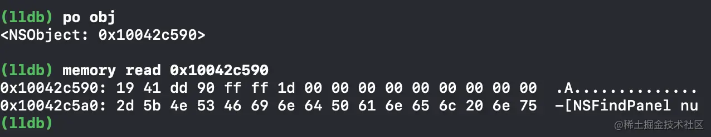

一个NSObject对象占用多少个字节
2022年5月7日
在 Objective-C 中，我们可以通过一些方法来获取一个 NSObject 对象占用多少字节；
代码获取 NSObject 实例对象的成员变量字节大小
获取一个
NSObject实例对象的成员变量所占用的字节大小，可以用runtime的api，class_getInstanceSize来获取1
2
3
4
5
6
7
8
9
10
11
12
13/**
* Returns the size of instances of a class.
*
* @param cls A class object.
*
* @return The size in bytes of instances of the class \e cls, or \c 0 if \e cls is \c Nil.
*/
OBJC_EXPORT size_t
class_getInstanceSize(Class _Nullable cls)
OBJC_AVAILABLE(10.5, 2.0, 9.0, 1.0, 2.0);
// 获得NSObject实例对象的成员变量所占用的大小 >> 8
NSLog(@"%zd", class_getInstanceSize([NSObject class]));也可以通过
malloc_size来获取
1 | extern size_t malloc_size(const void *ptr); |
- 通过 lldb

总之，系统分配了 16 个字节给 NSObject 对象，但是 NSObject 对象只使用了 8 个字节的空间；